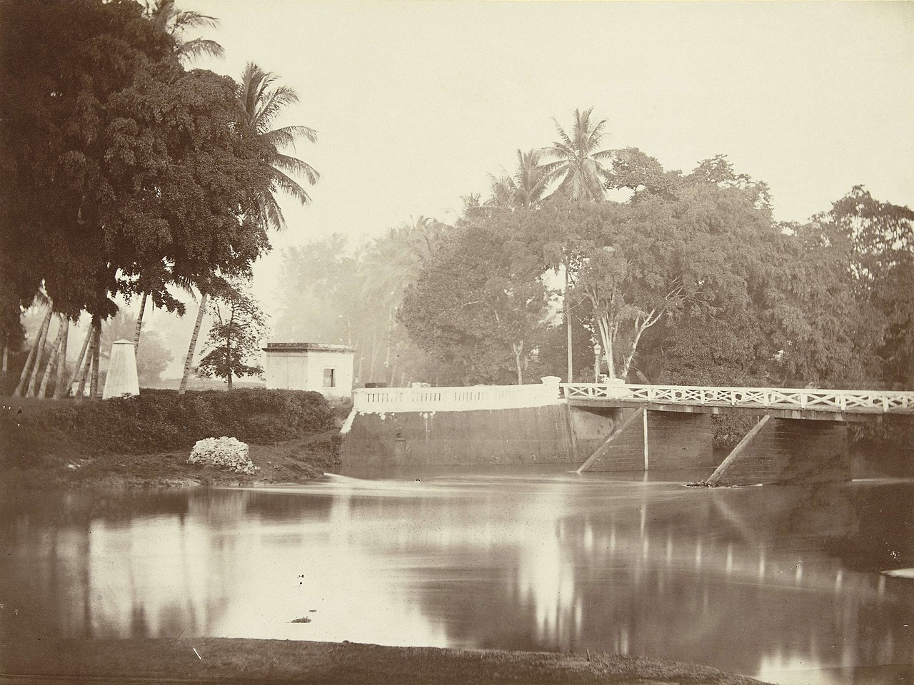

Dutch photographer who took more than 250 portraits and landscapes in the Dutch East Indies (now Indonesia) between 1864 and 1870. He worked as a carpenter in the Indies before returning to the Netherlands in the early 1860s. Moving back to the colony in 1864, he documented its land and people, working mainly in Java and Sumatra. He also photographed Bangka, Belitung, Borneo, and Nias. When Meessen returned to the Netherlands in 1870 he went into partnership with Abraham Vermeulen and began disseminating his photographs. In 1871 he gave King William III an elaborately decorated album with selected images, now kept at the Royal Library of the Netherlands. Other photographs were published by J. H. De Bussy in 1875 and exhibited in Paris and Amsterdam
Dutch photographer who took more than 250 portraits and landscapes in the Dutch East Indies (now Indonesia) between 1864 and 1870. He worked as a carpenter in the Indies before returning to the Netherlands in the early 1860s. Moving back to the colony in 1864, he documented its land and people, working mainly in Java and Sumatra. He also photographed Bangka, Belitung, Borneo, and Nias. When Meessen returned to the Netherlands in 1870 he went into partnership with Abraham Vermeulen and began disseminating his photographs. In 1871 he gave King William III an elaborately decorated album with selected images, now kept at the Royal Library of the Netherlands. Other photographs were published by J. H. De Bussy in 1875 and exhibited in Paris and Amsterdam
| Person | Bag | Books |
|---|---|---|
| Ram | 1 | 3 |
| Shyam | 1 | 6 |